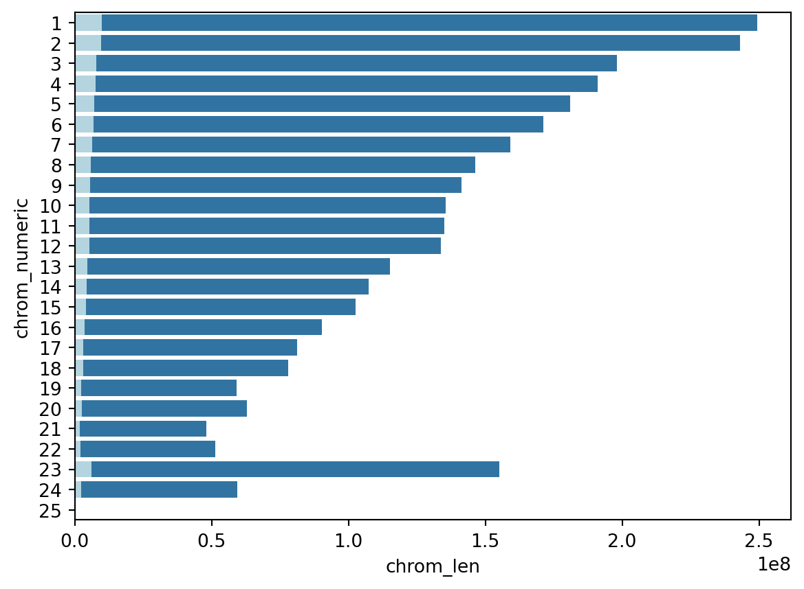

import pandas as pd
import seaborn as sns
import numpy as np
import matplotlib.pyplot as plt
import matplotlib.patches as mpatchesTutorial: How big is a genome? Exploring size and scope of the human genome in Python
Introduction
This tutorial uses basic libraries in Python to explore how big the human genome is and the volume of data generate when we submit a sample to a genetic testing service like 23andMe.
Preliminaries
Libraries
We’ll use standard Python data science libraries in this tutorial, including pandas, seaborn, and numpy.
Data
The main dataset in this tutorial is a table of chromosome lengths from the NCBI.
This is a small dataset, so we can quickly build a pandas dataframe from the data:
# raw data lists
chromo_numeric = [1,2,3,4,5,6,7,8,9,10,
11,12,13,14,15,16,17,
18,19,20,21,22,23,24,25]
chromo_str = ["1","2","3","4","5","6","7","8","9","10",
"11","12","13","14","15","16","17",
"18","19","20","21","22","X","Y","Mito"]
chromo_len = [249250621,243199373,198022430,191154276,180915260,
171115067,159138663,146364022,141213431,135534747,135006516,
133851895,115169878,107349540,102531392,90354753,81195210,78077248,59128983,
63025520,48129895,51304566,155270560,59373566,16569]
# convert to series
chromo_numeric_ser = pd.Series(chromo_numeric)
chromo_str_ser = pd.Series(chromo_str)
chromo_len_ser = pd.Series(chromo_len)
## additional info
snps_approx = chromo_len_ser*0.04
#chromo_type = ["Autosome","Sex","Organelle"]
#chromo_type = np.repeat(chromo_type, [22,2,1], axis=0)
#chromo_type_ser = pd.Series(chromo_type)
## build pandas dataframe
chromo_info = pd.DataFrame({"chrom_numeric": chromo_numeric_ser,
"chromo_str": chromo_str_ser,
#"chrom_type": chromo_type_ser,
"chrom_len": chromo_len_ser,
"snps_approx": snps_approx})The assembled data looks like this:
chromo_info| chrom_numeric | chromo_str | chrom_len | snps_approx | |
|---|---|---|---|---|
| 0 | 1 | 1 | 249250621 | 9970024.84 |
| 1 | 2 | 2 | 243199373 | 9727974.92 |
| 2 | 3 | 3 | 198022430 | 7920897.20 |
| 3 | 4 | 4 | 191154276 | 7646171.04 |
| 4 | 5 | 5 | 180915260 | 7236610.40 |
| 5 | 6 | 6 | 171115067 | 6844602.68 |
| 6 | 7 | 7 | 159138663 | 6365546.52 |
| 7 | 8 | 8 | 146364022 | 5854560.88 |
| 8 | 9 | 9 | 141213431 | 5648537.24 |
| 9 | 10 | 10 | 135534747 | 5421389.88 |
| 10 | 11 | 11 | 135006516 | 5400260.64 |
| 11 | 12 | 12 | 133851895 | 5354075.80 |
| 12 | 13 | 13 | 115169878 | 4606795.12 |
| 13 | 14 | 14 | 107349540 | 4293981.60 |
| 14 | 15 | 15 | 102531392 | 4101255.68 |
| 15 | 16 | 16 | 90354753 | 3614190.12 |
| 16 | 17 | 17 | 81195210 | 3247808.40 |
| 17 | 18 | 18 | 78077248 | 3123089.92 |
| 18 | 19 | 19 | 59128983 | 2365159.32 |
| 19 | 20 | 20 | 63025520 | 2521020.80 |
| 20 | 21 | 21 | 48129895 | 1925195.80 |
| 21 | 22 | 22 | 51304566 | 2052182.64 |
| 22 | 23 | X | 155270560 | 6210822.40 |
| 23 | 24 | Y | 59373566 | 2374942.64 |
| 24 | 25 | Mito | 16569 | 662.76 |
Data visualization
Chromosome size
sns.barplot(data = chromo_info,
x = "chrom_len",
y = "chrom_numeric",
orient = 'h'#,
#hue = "chrom_type"
);How much of human genome is examined by 23andMe?
Calculations
total = chromo_len_ser.sum()
snps_23_and_me = 929045 # from 1117.23andme.txt
other = total -snps_23_and_me
snps_percent = snps_23_and_me/total*100
print("Approximately", round(snps_percent,3), "percent of our genome is represented in data from 23andMe")Approximately 0.03 percent of our genome is represented in data from 23andMePiegraph
plt.close()
plt.pie([snps_23_and_me,other],
labels=["23andme\nPositions","Rest of\ngenome"]) ;How much of our genome is examined in research-grade datasets?
genomes1k = 125484020 # Byrska-Bishop et al 2022
other = total -genomes1k
snps_1kgpercent = genomes1k/total*100Pie graph
plt.close()
plt.pie([genomes1k,other],
labels=["1000 Genomes\nProject","Rest of\ngenome"]) ;
Chromosome size versus amount survey
plt.close()
bar1 = sns.barplot(data = chromo_info,
x = "chrom_len",
y = "chrom_numeric",
orient = 'h'#,
#hue = "chrom_type"
);
bar2 = sns.barplot(x="snps_approx", y="chrom_numeric", data = chromo_info,color='lightblue',orient = 'h');
top_bar = mpatches.Patch(color='darkblue', label='x')
bottom_bar = mpatches.Patch(color='lightblue', label='y')
plt.show()
Size of consumer genomics industry
TODO: data source
mil = 1000000
plt.close()
N = [25000000/mil,14000000/mil,8000000/mil,1628438/mil,300000/mil]
company = ["Ancestry.com","23andMe","MyHeritage","Family Tree DNA\nFamily Finder","Living DNA"]
df = pd.DataFrame({"DNA tests (millions)": N,
"Company": company})
sns.barplot(data = df,y = "DNA tests (millions)", x = "Company")